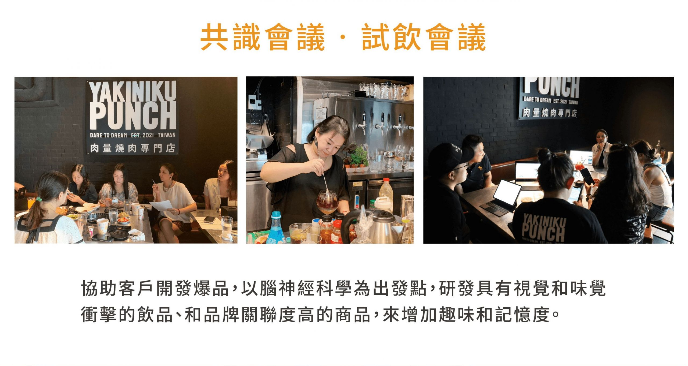

服務品牌
📚 康軒文教
🥗 健康食品品牌
🎓 教育機構
💊 保健品牌
🏋️ 健身中心
📋 市場研究機構
康軒文教 — 學習雜誌名單蒐集

康軒文教學習雜誌訂閱名單蒐集活動，iFLocus 協助在學區周邊、家長聚集場域精準推播問卷廣告，有效蒐集高品質潛在訂閱名單。
- 鎖定國小、國中學校周邊家長接送場域
- 覆蓋補習班聚集街道及社區親子活動中心
- 精準觸達有學齡兒童的家庭（6–15 歲子女）
- 問卷填答率達 22%，名單品質遠高於一般廣告來源
- 每筆名單取得成本較 Facebook 廣告降低 60%
健康食品品牌 — 潛在客戶名單蒐集
健康食品品牌透過 iFLocus 在健身中心、有機超市、醫療院所等健康意識族群聚集場域，精準推播問卷調查廣告，建立高質量潛客名單。
- 鎖定健身房、瑜伽中心、有機超市周邊場域
- 覆蓋醫療院所、藥局等健康意識高的場域
- 透過 AiLocus AI 分析高健康意識消費輪廓
- 問卷完成率達 31%，後續試用申請轉換率高達 18%
iFLocus 如何協助名單問卷品牌
🎯
意圖族群場域定位
在目標族群最常出現的場域推播問卷廣告，確保每一份名單都是高品質潛客。
📝
問卷 Landing Page 優化
協助設計高轉換率的問卷頁面，搭配場域推播廣告，最大化名單蒐集效益。
💰
CPL 成本大幅降低
場域精準推播確保廣告觸達高相關性族群，CPL（每筆名單成本）較傳統廣告降低 40–60%。